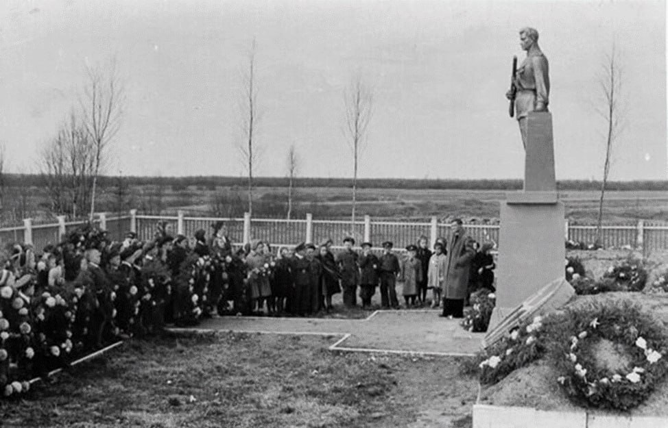
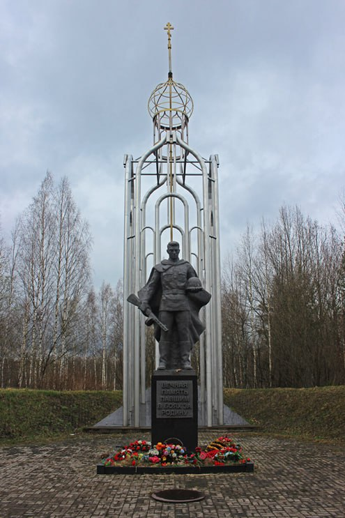

Памятник погибшим появился не сразу. А во время войны несколько военно-полевых госпиталей располагались недалеко от въезда в Невскую Дубровку. Там были и санитарные захоронения, некоторые именные, но в основном безымянные захоронения. Только через одиннадцать лет после окончания войны, в 1956 году, одно из крупных военных захоронений было приведено в порядок и на нём установлен памятник неизвестному солдату. Он был сделан из гипса по инициативе дубровчан и ветеранов. На то время погребёнными здесь, официально признавалось всего 600 человек.
Мемориал "Братское воинское захоронение"


Постепенно памятник разрушился и по сохранившимся фотографиям был сделан новый. 9 мая 2015 года на территории Братского воинского захоронения состоялось торжественное открытие памятника «Неизвестному солдату» и зажжён Вечный огонь. Постепенно поисковые отряды находят всё новые и новые захоронения, переносят останки к мемориалу. Сейчас здесь считаются захороненными около 42 000 защитников правого берега, из них известными считаются около 35 000 солдат. В районе Дубровки погибли тысячи воинов разных национальностей, и среди них – 12 испанских добровольцев.